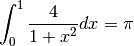
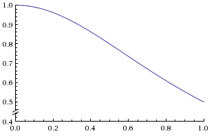

Compiling and First Two Activites¶
Compiling an MPI program¶
To compile an MPI program on your local cluster, you can enter the following commands in the terminal:
First, we need to make an executable file from the MPI program by using mpicc:
mpicc -o filename filename.c
Then you are able to execute it using mpirun :
mpirun -machinefile machines -np #processes ./filename
Note
machines: is the instruction for running the executable file on a cluster. It tells the executable file to run on which nodes and how many times on those nodes. For example, machines on LittleFe has structure as follow:
- node000.bccd.net slots = 1
- node011.bccd.net slots = 1
- node012.bccd.net slots = 1
- node013.bccd.net slots = 1
- node014.bccd.net slots = 1
- node015.bccd.net slots = 1
Moreover, you can also compile an MPI program without using machines, you can use the following command to run only on the master node:
mpirun -np #processes ./filename
Note
Please ask your instructor for instructions on how to log in onto your local machine.
Try the simple examples¶
Log into your cluster and make sure that you have the following example files in your account:
Simplest Hello World Example:
download hellompi.c
Hello World by Sending messages:
download example2.c
You can specifically compile the simplest example like this:
mpicc -o hellompi hellompi.c
To run it on your cluster using 3 processes, you can do this, assuming you also have a file called machines that describes your system:
mpirun -machinefile machines -np 3 ./hellompi
Depending on how many other people are using your cluster and how big it is, you can try different numbers of processes by changing the 3 above.
Once that seems to be working for you, try the exammple 2, which uses sends and receives.
Note
The procedure for compiling and running all of your mpi code will follow this format.
Activity 1: Computing  ?¶
?¶
Download the source code to do this activity (originally from www.mcs.anl.gov [1]):
:download: download seq_pi_done.c and download mpi_pi_done.c <mpi_pi_done.c>
Have it open in an editor so that you can follow along. Or at a minimum use your browser and right-click on the link above and choose to open it in a new browser window.
In this activity, we are going to analyze speedup and efficiency of a program that
computes using integration. We have formula:

Therefore, we can compute the area under the curve to get the value of the integral.
Figure 4: Graph for function
| Comments: |
|
|---|
To do:
In this activity, we want to time the computation. This is done using the MPI_Wtime() function. You can experiment using different number of bins and different number of processes.
We want to time several combinations of bin sizes and number of processes to calculate the speedup and efficiency of the program. Compile and run the sequential program using 125 million, 250 million, 500 million, 1 billion and 2 billion for the number of bins. Make a copy of the template provided at this link and record the execution times.
Next, compile and run the MPI program using 2, 4, 8, 12 and 16 processes with the number of bins listed above. Continue to record these execution times in same table. The speedup and efficiency for each combination is computed for you. You should now see graphs corresponding to speedup and efficiency. At what number of threads do you notice both speedup and efficiency begin to decrease? What does this tell us about the number of processes we should use for this parallel program?
Activity 2: Vector Matrix Multiplication¶
To download the source code to do this activity:
download vector_matrix_todo.c
Have it open in an editor so that you can work on it. Or at a minimum use your browser and right-click on the link above and choose to open it in a new browser window.
In this activity, we are going to compute vector matrix multiplication. This activity illustrates the use of MPI_Bcast, MPI_Scatter, and MPI_Gather to do this multiplication. First, we want you to complete this MPI program by filling codes at TO DO. After having completed this task, try to run this MPI program by using different number of processes. Try to explain to yourself what is happening !
Here is how the vector matrix multiplication works. First, let’s say we have a matrix A, and a vector x as below:

Figure 5: vector matrix multiplication Obtained from cms.uni-konstanz.de [2]
This multiplication produces a new vector whose length is the number of rows of matrix A. The multiplication is very simple. We take a row of matrix A dot product with vector x, and this produces an element of the result vector. For instance, the first row of matrix A dot products with vector x will produce the first element in vector y.
| Comments: |
|
|---|
If you get stuck and wanto move on, download the entire source code (originally from www.public.asu.edu/~dstanzoi [3]):
download vector_matrix_done.c
References
| [1] | http://www.mcs.anl.gov/research/projects/mpi/usingmpi/examples/simplempi/main.htm |
| [2] | http://cms.uni-konstanz.de/fileadmin/informatik/ag-saupe/Webpages/lehre/na_08/Lab1/1_Preliminaries/html/matrixVectorProduct.html |
| [3] | http://www.public.asu.edu/~dstanzoi/matvec.c |

{kind=link}